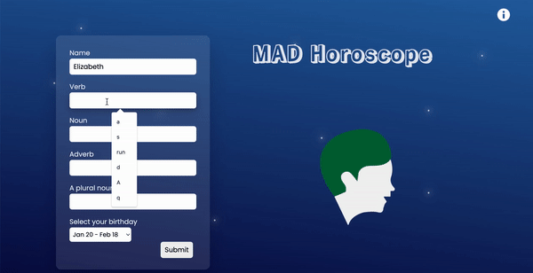
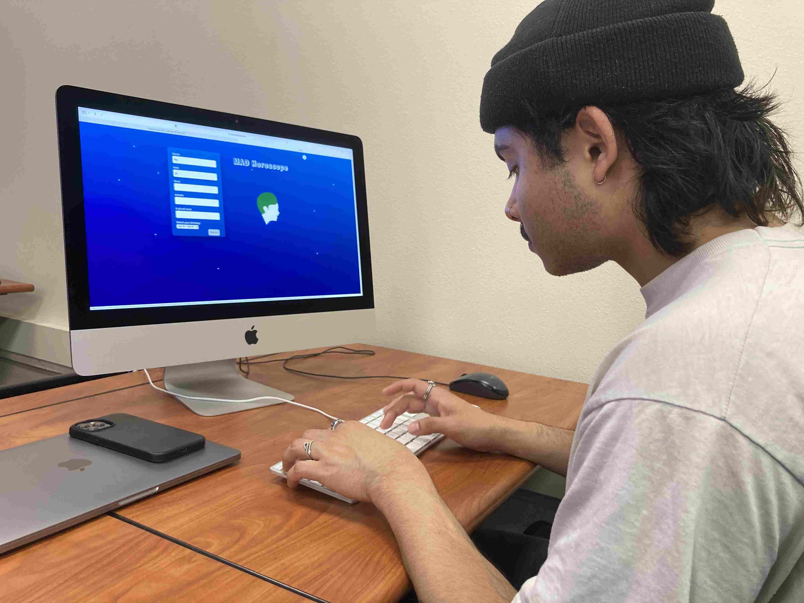
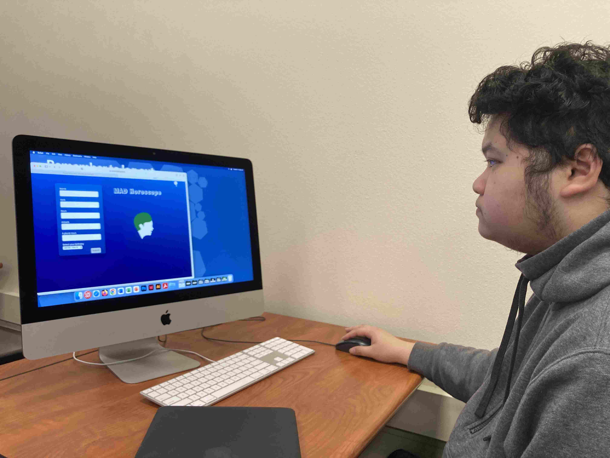

Today’s user testing session was very insightful. I tested my mad libs design that I chose as my final project. What I noticed during the user testing session was that both Jason and Ricard got stuck when they tried to fill the adverb input field. They told me that it would be helpful to have example texts inside each field so that users can know what kind of word to write. The other thing my user testers mentioned was highlighting or changing the font style for each word that they input on the result page. This will help users immediately see the keyword they write. Lastly, one of my testers thought the birthday dropdown menu was a little bit confusing for her and suggested using a different form to choose a birthday like a calendar to jot down easily.
In addition to working on JavaScript to show different illustration images according to each birthday user selected, my plan is to fix those issues that I found during the session and make changes as I mentioned above to incorporate the feedback I received from my testers.
